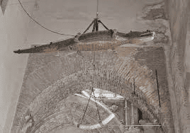

Sevilla es una ciudad que deja huella y que muchos coinciden en definir como especial. Puede que sea por la grandiosidad de sus monumentos. Quizá por el encanto de barrios populares como Triana.
La Giralda es un icono de la ciudad y alberga uno de sus principales encantos en el mirador. Se trata de unas fantásticas vistas de Sevilla con un patio de naranjos, muy típico de Andalucía, y el mayor templo gótico de Europa, la Catedral, en primer plano. La visita al Real Alcázar descubre un extraordinario conjunto palaciego repleto de detalles. Si viajas en verano, aprovecha para disfrutar de sus visitas nocturnas y del festival que se celebra en sus jardines.
Curiosidades de la catedral de Sevilla
La Catedral de Sevilla
es la catedral gótica más grande del mundo. Sin embargo, su planta no tiene la forma de cruz latina propia de este tipo de templos, sino que es cuadrada. La razón es que se construyó sobre la antigua mezquita mayor de la ciudad, adaptándose a la estructura que existía.
Así, el alminar árabe se convirtió en el campanario del edificio, la Giralda, que con sus casi cien metros de altura llegó a ser en su momento la torre más alta del mundo.
El Patio de los Naranjos y la Puerta del Perdón también son herencia de la mezquita.
La Giralda y sus “réplicas”
¿Sabías que la Giralda no tiene escaleras, sino rampas? Son 35 rampas lo suficientemente anchas para que el sultán pudiera subir montado a caballo por ellas para disfrutar de las vistas.
La belleza arquitectónica de la Giralda ha fascinado a tanta gente que es posible encontrar “réplicas” en otros sitios de España y del mundo. Algunas de las más logradas son la de Kansas City, en un centro comercial; la del pueblo de L’Arboç del Penedés (Tarragona), y la llamada Giraldilla de la iglesia de San Pedro de Carmona (Sevilla). Incluso hubo una “copia” en el Madison Square Garden de Nueva York entre 1890 y 1925.
La Vidriera de Carlos V
La catedral sevillana cuenta con un patrimonio artístico muy valioso. De hecho, se considera una de las mejores pinacotecas españolas, donde no faltan obras de maestros como Murillo, Velázquez, Goya o Zurbarán.
Entre esculturas, pinturas, orfebrería, tejidos y otras piezas, hallarás sorpresas. Su retablo mayor, por ejemplo, con 44 relieves y más de 200 figuras es el más grande de la cristiandad.
Y no te extrañes si al mirar la vidriera de San Sebastián (sobre la portada de los Palos) la cara del santo te resulta familiar: aparece representado con los rasgos del emperador Carlos V.
¡¡Un cocodrilo en la catedral!!
Tranquilo, que no muerde. Lo verás colgando del techo, junto a un colmillo de elefante y una brida, si entras desde el Patio de los Naranjos por la Puerta del Lagarto.
Se dice que fueron regalos que el sultán de Egipto envió al rey Alfonso X “El sabio” para pedir la mano de su hija. El rey rechazó el ofrecimiento pero se quedó con los presentes, que incluían un cocodrilo vivo, un colmillo de elefante y una jirafa domesticada.
Probablemente también despierten tu curiosidad las ánforas que hallarás expuestas en las cubiertas de la catedral: son las que utilizaron los constructores del siglo XV para rellenar el interior de las bóvedas.

La catedral “respira”
Todos los días, las bóvedas del edificio se dilatan varios centímetros a causa de los cambios de temperatura.
Por la mañana suben por el calor, y al finalizar el día bajan, realizando un movimiento similar a la respiración.
Es algo que se descubrió en 2006, a raíz de los sensores que se colocaron durante un proceso de restauración.
Esta “flexibilidad”, lejos de lo que pudiera parecer, es una ventaja que hace que la catedral sea más segura, ya que su arquitectura cuenta con margen de movimiento ante cualquier desastre.